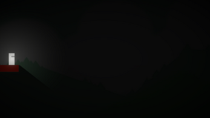
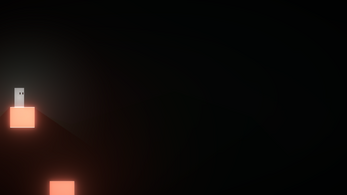
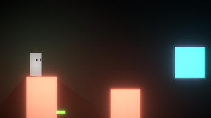
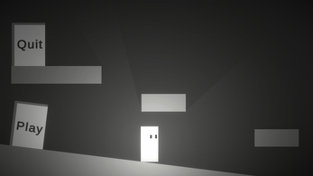

A smooth physics-based movement system built for responsive platformer gameplay. Focused on acceleration control, air movement tuning, and tight player feel.
Designed to feel consistent across different frame rates and input conditions, with emphasis on game feel over raw physics realism.
View on Itch.io →